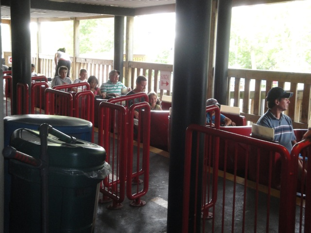

| |
Dragon Review

We're here at La Ronde to ride the Dragon. This is the parks indoor coaster. Yep, La Ronde has an indoor coaster. After getting in the longass cars and pulling down the lap bars, we're off!!! We start off with a spirl lift in the dark, so that's kind of fun. Then we crest the lifthill and are off. We slide down a curved drop before heading into some curves. Yeah, this ride doesn't do much. I hope you enjoy indoor curves, because don't worry. This ride is full of them. Curve after curve after curve. I suppose its a little fun for its cheesy factor, but I just honestly feels like Ghetto Space Mountain to me. I keep expecting a sign at the end that reads "Welcome to Alaska." But nope, we just get light as we glide back into the station. It's not a horrible coaster, but if you don't come here immedietly after the park opens, and end up waiting in the 30-45 minute wait this ride usually gets, you sure as hell will hate it as if it were another certain ride called Dragon. So yeah. Get here early to ride this if you want the credit. Oh, and Dragon is not on the Flashpass FYI.
5/10
Location: La Ronde
Opened: 1994
Built by: Intamin
Last Ridden: August 2, 2011
Dragon Photos

Home
|